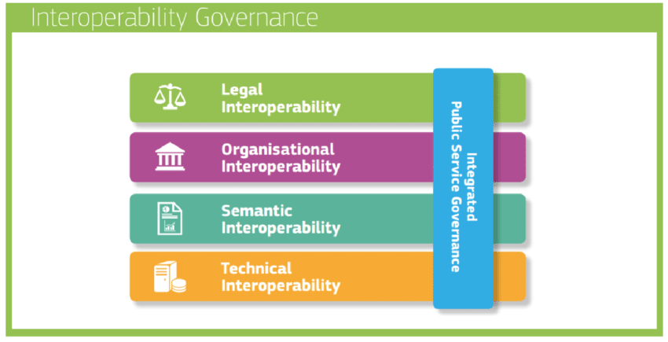
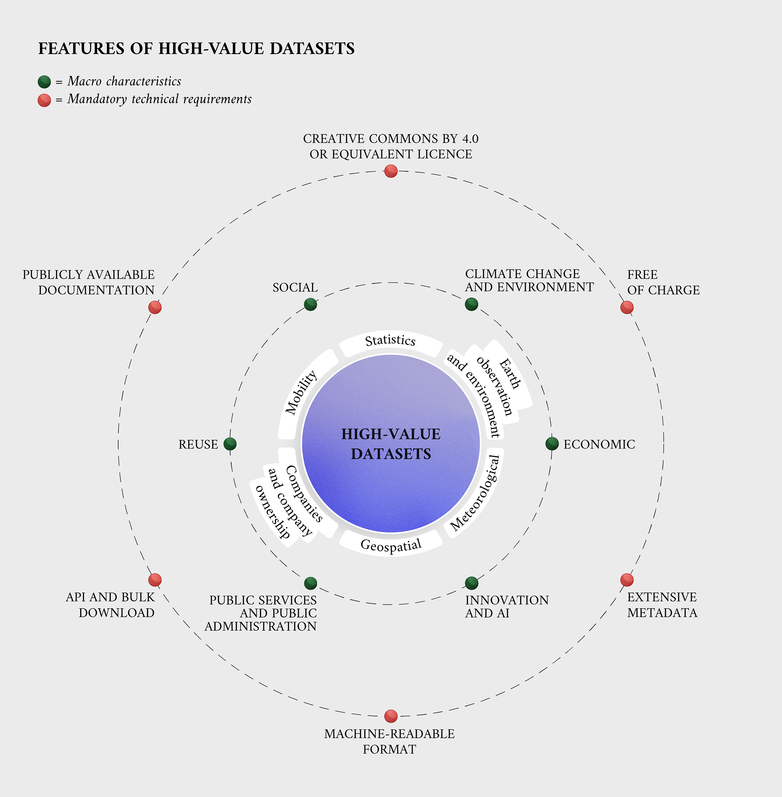
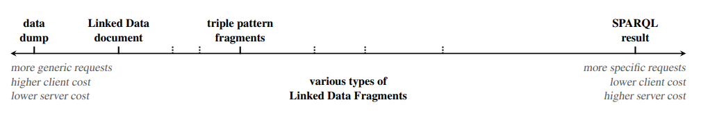
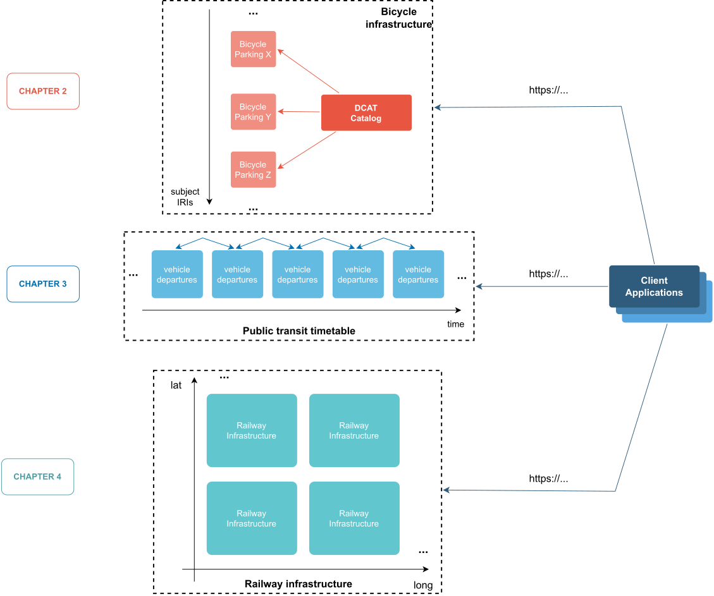

Decentralised Linked Data architectures for the transport domain
Doctoral dissertation submitted to obtain the academic degree of
Doctor of Computer Science Engineering
Supervisors
Prof. Ruben Verborhg, PhD - Prof Pieter Colpaert, PhD Department of Electronics and Information Systems Faculty of Engineering and Architecure, Ghent University
October 2024

Preface
I know, I know... it was about time. But as Ralph Waldo Emerson famously put it: “It’s not the destination, it’s the journey”. And believe me, it has been a long but an amazing one. A journey that started with a 9000 km trip from my native Colombia to Belgium in 2017. I decided to cross the Atlantic Ocean, despite already living at the better end of it (Caribbean, am I right?), leave everything and everyone that I knew behind, and try to pursue my life-long dream of traversing the world. However, I didn’t just decide to do a PhD to travel and see the world. That would not have been very smart. The main motivation came from my previous academic experiences during my master’s degree in the Universidad del Cauca. There I had the opportunity to have a first glimpse of what research was about, published my first papers, attended my first international conference, and I loved it.
I looked hard and around for the opportunity to continue an academic career, hopefully in a top institution and next to top researchers, while working in industry in the meantime. Almost 3 years after finishing my Master, the opportunity came on a random afternoon at the office, while scrolling through Facebook. My friend and former colleague at Universidad del Cauca, Leandro, posted about a PhD position at Ghent University. He was already living in Belgium and was working at Ghent University, although in a different research group. So my first thank you goes to you compadre and your very fortunate Facebook post that allowed me to apply to this PhD position and kickstart this life changing adventure. (I promise that I don’t check social media while at the office anymore. In any case Facebook stopped being cool a long time ago and I am too old for TikTok). Funny story, while applying to the lab, my interviewers forgot to account for the time difference between Colombia and Belgium and set an online meeting at 5 am Colombian time. I happily took it because having to take it at the office would have been way more awkward than scrolling Facebook, but as I was told later, that situation reflected my commitment (which was real) and helped me get selected.
Coming all the way to Ghent was accompanied by a rollercoaster of emotions. I was excited to start a new chapter in my life, but also scared of the unknown. One person was and has always been there to help me navigate through all of this, whether it was work-related or not. My next thank you needs to go to Pieter C., who has been present at all the stages of this PhD, including the 5 am interview, but also receiving me at the airport when I first landed in Belgium and giving me an immediate and slightly jet-lagged tour around the best city in the world! Thank you Pieter for believing in me, for giving me the opportunity to join KNoWS and specially for supplying me with a continuous and endless amount of enthusiasm for everything we did and still do. I am very grateful for all this time working together and for all the things I have learnt from you.
Joining KNoWS allowed me to meet a group of extremely talented people. So talented, that it was inevitable to face harsh case of impostor syndrome shortly after joining. But, I will never forget one day that I went to eat later than usual to Resto De Brug alone. There I was, questioning my life choices, when coincidentally Ruben V. walked in and joined me. He kindly asked how I was feeling so far in the lab and that conversation leads to my next thank you. Thank you Ruben for giving me the boost of confidence and motivation that I needed to keep going. But also for being a continuous source of inspiration over these years.
While I am at it, I also want to thank all my past and current colleagues at KNoWS for countless enriching conversations, smooth collaborations and nice moments. Thank you Anastasia (I’ll get back to you, I promise 😛), Arthur, Beatriz, Ben, Brecht, Bryan-Elliott, Cristian, Danica, Dieter D., Dieter D. P., Dörthe, Dwight, Dylan, Elias, Els, Esther, Femke, Gayane, Gerald, Gertjan, Gilles, Harm, Ieben, Jeroen, Jiao, Joachim, Jonas, Jonni, Jos, Katrien, Kush, Laurens, Maarten, Mathijs, Martin, Miel, Patrick, Pieter B., Pieter H., Raf, Ruben D, Ruben E., Ruben T., Shamz, Shehab, Sindhu, Sitt Min Oo, Stijn, Sven, Thomas, Tom, Vidya, Wout and Wouter. A special thank you to Erik who at the very beginning made possible my hiring at the lab and during a large part of this PhD was acting behind the scenes to make sure that everything was running smoothly. Thank you also to Kristof, Laura, Joke and all the administrative staff at IDLab, UGent and imec.
As this book reflects, my PhD was only possible thanks to the help and support of many people and to the work carried out over several projects and collaborations. First of all, I want to thank specially all my examination committee members prof. Filip De Turck, prof. Steven Verstock, prof. Marina Aguado, prof. Luis Daniel Ibañez, prof. Pieter Bonte and Dr. Philippe Michiels for their time and effort in evaluating this work, and the valuable feedback they provided. I want to thank all the people that I had the pleasure to work with during these years. Specially to Oscar and David, with whom I collaborated in my very first project at KNoWS and always have a blast on every conference we attend together. To Pieter M., Han and Wout B., with whom I worked in the Velopark project. To Marina, Polymnia, Ivo, Dragos, Ghis and all the ERA team for trusting me and without whom certainly this PhD would have not been possible. Bottom line, a big thank you to all the project partners and co-authors I was lucky to work with during these years.
I also need to mention the person responsible for me having a never-ending urge to keep on exploring the world, my mother Olga. From very early on she always worked hard to keep on showing me how big and amazing the world was, and how much there was to learn from it. At the same time my father Eduardo taught me the importance of hard work and dedication, and how cool was to be the one that knew everything about almost anything. My brother Juan Sebastian was always my partner in crime and the source of many fun times. Thanks for holding the fort. I love you all and I am very grateful for all the effort and support you continue to give me. Thank you also to all my friends in Colombia, Belgium and around the world. Most of you I don’t see very often, but whenever we do it always feels like time didn’t go by.
Finally, I want to thank the most important person in my life, my love and partner in life, Anastasia (I told you I’d get back to you 😉). If there is something I will always be grateful to KNoWS, is for having met you. A big part of the credit for this PhD certainly goes to you. You had my back at all times, you were there to listen to me, to support me, to motivate me, to inspire me. I am very lucky to have you in my life and I am very grateful for all the love and happiness you bring me. I love you, I love our family and I can’t wait to continue living my dream of traversing the world, but this time by your side.
Summary
Data interoperability has been and continues to be an important open challenge both in the public and private sector. The state of the art on interoperability, suggests that a multidisciplinary approach, involving both technical and human coordination, is needed in order to truly achieve interoperability within and across organisational boundaries. In this direction, the Semantic Web vision was proposed more than two decades ago. Thanks to well placed and previously agreed upon semantic data models, the existence of intelligent agents that can reason across a Web of data would be made possible, and thus automatically solve the interoperability challenge. Unfortunately, this vision continues to be a dream to this day. However decentralised Linked Data technologies, which are sourced from the efforts of the original Semantic Web vision, are gaining traction despite their negative reputation and an increasing adoption can be observed both in the public and private sector.
In the last decade, the European Union has been continuously advocating for more interoperable systems and data, and has laid multiple legal frameworks (e.g., the European Interoperability Framework, the Open Data Directive, the Interoperability Act, among others) to promote and support the transformation of (public) organisations and development of new digital services that are interoperable by design and by default. In this landscape, the Transport domain is regarded as one of the key sectors and high-value data sources by the EU where the efforts for interoperability should be prioritised, given its direct impact on citizen life and on the fight against global issues such as climate change.
The most recent technological trends, also sourced from EU initiatives such as Data Spaces, go towards decentralised system infrastructures. Data Spaces recognise the practical impossibility of centralising all the knowledge in one single place, and aim to allow for sovereign, trustful and legally compliant governance of data assets within and across organisations. This raises the need for interoperability solutions that allow organisations to migrate legacy technology stacks and maintain data life cycles (creation, publication and consumption) at low operational costs. Here, Linked Data technologies are suited to provide a technical framework for reaching interoperability, given their native decentralised nature sourced from the Web itself.
This PhD work studies the use of decentralised architectures based on Linked Data technologies over 3 real-world use case scenarios coming from the transport sector, namely (i) publishing bicycle infrastructure information for public use; (ii) public transport route planning over the Web and; (iii) railways infrastructure data integration for supporting route compatibility checks. Concretely I study the suitability of Linked Data technologies to support practical solutions for use cases within these scenarios and whether Linked Data technologies can be adopted for production-ready systems. The challenges studied in this work include, the feasibility of creating decentralised Web applications using modern and developer friendly frameworks over semantically described Linked Data, and analysing the scalability and limitations of Linked Data based solutions and their capabilities to achieve automated data integration that facilitates interoperability.
The main contributions of this dissertation include the provision of evidence on the use and adoption of Linked Data technologies as an interoperable solution for real and important use cases in the transport domain. For instance, to this date municipalities and 11 private organisations continue to use the Velopark solution that supports the decentralised publishing and maintenance of semantically annotated bicycle parking data in Belgium. Also the system architecture created for ERA to integrate and publish a knowledge graph containing information about the European railway infrastructure and authorised railway vehicles, motivated the agency to make Linked Data technologies the default setting for new data endeavours. More importantly, the ERA Vocabulary has been adopted as an official building block for the Common European Mobility Data Space and as a reference data model in the EU legislation.
The main conclusion drawn from this PhD work is that Linked Data technologies are ready for the real world. Practical (user-oriented) Web applications can be created and supported over decentralised and cost-efficient architectures based on Linked Data technologies. Examples of this can be seen in the case of the Velopark user application for visualising and looking for bicycle parkings of specific characteristics, and in the case of the route compatibility check application that allows to calculate custom routes over the European railway network and assess its physical and technical compatibility with given vehicle types, which is maintained by the EU Agency for Railways. Both applications remain operational to this day. In this PhD work, we also see that alternative design of data interfaces that aim for a more balanced (computational) cost distribution among data publishers and consumers, are able to provide scalable and cost-efficient technical solutions for interoperable data exchange. This is evidenced in the study made in this work of Linked Data-based APIs for the case of public transport route planning, whose foundational principles and results can also be applied to other use cases, even outside the transport domain. However, additional research is needed to overcome the observed limitations in terms of performance when handling large volumes of data. For example, with more complex API designs that allow for more granular access to particular and relevant, yet still cost-efficiently published, data subsets for given queries. Lastly, it is important to note that a common denominator observed throughout the different scenarios explored during this PhD work, is the fact that the main obstacles for interoperability using Linked Data technologies were not of technical nature but of human nature. Changing mindsets of people in charge could prove to be more challenging than building the technical solutions that provide interoperability across systems, although as this work shows, is not impossible. The quick development of demonstrators that highlighted the benefits of Linked Data technologies and at the same time showed that solutions could be built in relatively short time spans and at low costs, proved to be the key asset to overcome this type of human-made obstacles.
Future work should focus on the development of technical specifications that allow for low-cost and flexible data exchange architectures that overcome the limitations of the data dump vs query API dichotomy. This should be complemented by ways to describe data sources, not only at a metadata level, but also at a granular content level in a way that enables applications to autonomously discover and efficiently select sources relevant for their queries, thus moving us a step closer to the original Semantic Web dream. Also, multiple challenges will arise when trying to provide functional solutions for all the required dimensions, necessary to accomplish the vision of Data Spaces based on Linked Data technologies.
1. Introduction
"The nice thing about standards is that you have so many to choose from"
The last couple of decades have witnessed a rapid and transformative evolution of data-related technologies. We have seen the discussion moving from Big Data [28, 29], which gained traction at the beginning of the century with the rise of Web traffic and the accelerated growth of companies like Google, Amazon, Meta, etc; all the way to transversal and all-encompassing data-driven economies [30, 31] supported on Data Spaces [32, 33, 34, 35]. One key challenge has been and continues to be at the core of the data-related technological evolution: data interoperability [36, 37]. Recent attempts at understanding the complexities and challenges for achieving interoperability across data systems, agree on presenting a multidimensional view of it, showing that it goes beyond a mere technical issue and that a multidisciplinary effort would be required to address it [12, 13]. This doctoral dissertation shows how data interoperability can start to be tackled with Semantic Web [38], Linked Data [15] and Knowledge Graph [39] technologies, concretely by showing real examples where these technologies have been applied in the transport domain.
The concepts of Semantic Web, Linked Data and Knowledge Graph represent a progressive evolution [40] of the original vision introduced by Tim Berners-Lee et al [1], aiming to extend the capabilities of the Web by adding structure and meaning to its content through metadata and ontologies. Each term comprises different aspects and in their own time, had a slightly different focus: Semantic Web emphasised semantic enrichment of Web content, Linked Data highlighted the importance of interconnection of data sources published over the Web and Knowledge Graphs continue to prioritise the representation of knowledge as graph-based structures. Nevertheless, they all share the same foundational and technological principles, having RDF1 and some of its related standards as common denominators. In this doctoral dissertation, I will continue to refer in general to these sets of concepts and technologies as Linked Data technologies given its focus on publishing interoperable data on the Web.
Linked Data technologies were originally conceived as eminently decentralised technologies that would allow the development of applications, seamlessly accessing, querying and processing data from different locations and providers over the Web. This would be possible thanks to the existence of an also decentralised network of ontologies through which these applications (a.k.a intelligent agents [41]) would perform logical reasoning and understand the data sources they represent. However, in practice the implementation of Linked Data technologies has not been really decentralised and has focused mainly on the development of centralised storage and querying technologies of semantically annotated data [11]. A proof of this is the fact that currently the main highlights of Linked Data technologies are massively centralised knowledge graphs such as Wikidata2 and centralised data models such as schema.org3 [42]. The reasons behind this deviation from the original vision may be attributed to the additional challenges that truly decentralised system architectures face regarding scalability and query performance [43]. Yet, from a diametrically opposed point of view, it remains a practical impossibility to consider the centralisation of all data on the Web4 and in many cases, even within single organisations. This leads to considering in-between solutions as the most likely scenario towards the future, having the recent initiatives of Data Spaces as examples, advocating for controlled, trustful and decentralised data ecosystems [34, 35], where efficient and automated data access would be made possible across a finite set of trusted data stakeholders. This PhD work embraces this vision and focuses on studying practical solutions, based on Linked Data technologies, that could enable the creation of decentralised applications over the Web.
Historically there has been a predominant negative perception in industry about Linked Data technologies, which are usually deemed by practitioners as too complex for practical scenarios and not production-ready5 6 7 8 9 [44]. These perceptions started to change in recent years, specially since the announcement of the Google Knowledge Graph 10 , and currently we can observe an increased adoption with industrial examples in the biomedical [45], pharmaceutical [46], manufacturing [47, 48], tourism11 , news12 [49] and (e-)commerce sectors13 14 [50, 51], among others. This doctoral dissertation tries to be one more piece of evidence coming from the transport sector.
I opted to focus on the transport domain and study the application of Linked Data technologies mainly due to the high importance that transportation has in our daily lives, for instance, influencing how much time we spend getting to school or work and determining where we choose to live. Similarly, the transport sector offers challenging organisational and data ecosystems. Public and private organisations (varying depending on the country) need to interact, putting forward a high demand for interoperability solutions within and across country borders [52]. Also, heterogeneous datasets of spatiotemporal nature need to be integrated to support the provision of complex and critical transportation services such as public transportation and logistics services. I had the fortune to be involved in several transport-related projects during these PhD years, which provided me with concrete goals and real use case scenarios to study Linked Data technologies as a potential interoperability solution.
This PhD dissertation, studies if and how data interoperability in the transport domain could be addressed in practice with Linked Data technologies. First in section 1.1, a brief introduction is given to the basic concepts around Linked Data technologies and the related system architectures proposed for its implementation. Then, section 1.2 presents the context and motivations for this work, which are framed within the European strategy for interoperability. The main reason being that the application scenarios studied in this work, took place in the European context. Section 1.3 elaborates on more concrete technical challenges related to under-specified top-down initiatives advocating for data interoperability by design, also aggravated by a lack of truly interoperable, performant and cost-efficient technical solutions. Later in section 1.4, the concrete research challenges are described, followed by the main contributions of this work in section 1.5. Section 1.6 presents the impact achieved thanks to having the opportunity to work on a set of real use cases, and section 1.7 lists all the related publications. Lastly, section 1.8 describes the outline of the rest of this PhD dissertation.
Despite the restless data hoarding efforts of companies like Google, Meta, etc.
https://web.archive.org/web/20220602202150/https://www.libraryjournal.com/story/the-linked-data-myth
https://medium.com/airbnb-engineering/scaling-knowledge-access-and-retrieval-at-airbnb-665b6ba21e95
1.1. Linked Data and related system architectures
Above I mentioned that this dissertation studies how data interoperability can be start to be tackled in practice with Linked Data technologies. But what are Linked Data technologies and how do they work? In this section, I provide a brief overview of the main concepts and system architectures built for Linked Data technologies.
The term Linked Data was coined by Tim Berners-Lee, the inventor of the World Wide Web, in 2006 when he published a design note on the W3C website1, outlining a set of guidelines for publishing and connecting structured data on the Web, as part of his broader vision for the Semantic Web [1]. In essence, the Semantic Web is the vision of a more machine-understandable Web and Linked Data are the set of best practices for data to be machine-understandable. Berners-Lee defined four principles to create and publish Linked Data:
-
Use URIs as names of things: A uniform resource identifier (URI) is a string of characters that serves as a unique identifier for various types of things, including digital content, tangible objects, or abstract concepts. URIs enable to differentiate between different entities while also recognizing those that are the same. For instance, an entity may have different names in different languages, but its URI remains constant. To ensure the continuity of its meaning, a URI needs to be persistent, meaning it is permanently associated with a specific resource.
-
Use HTTP URIs so that people can look up those names: Linked Data commits to use the HTTP protocol to allow data sources to be accessed using generic data applications such as browsers, search engines, etc.
-
When someone looks up a URI, provide useful information, using the standards (RDF and SPARQL): Linked Data entails publishing machine-readable and easy to interlink data. It is then crucial to use a standard format to represent the data and to use a standard query (search) language. The W3C recommendations RDF and SPARQL fulfill this role as standard solutions.
-
Include links to other URIs to discover more things: URIs guarantee entity identifiers to remain globally unique. This enables hyperlinks to be set between entities in different data sources. These (RDF) links connect all Linked Data into a single global data graph and enable applications to discover new data sources on the fly.
The above principles rely mainly on the existing technologies of the Web such as and HTTP . However, instead of using HTML as in regular websites intended for humans, Linked Data relies on the Resource Description Framework (RDF) to represent data for machines. RDF is a graph-based model for representing information on the Web2. It is based on the idea of making statements about resources in the form of subject-predicate-object expressions. These expressions are known as triples in RDF terminology and are used to represent the relationships between entities. For example, the fact that the architect of the Ghent Sint-Pieters railway station was Louis Cloquet, may be represented in RDF as follows: <Ghent-Sint-Pieters> <architect> <Louis Cloquet>. In this example, <Ghent-Sint-Pieters> is the subject, <architect> is the predicate, and <Louis Cloquet> is the object of the triple. However, for this to be an actual RDF triple, each of the elements must be a URI (or a literal), as follows:
<http://www.wikidata.org/entity/Q800814> # Ghent Sint-Pieters
<http://www.wikidata.org/property/P84> # architect
<http://www.wikidata.org/entity/Q2673824> # Louis Cloquet
The above URIs conform an actual triple from Wikidata and can be used to retrieve more information about the entities by dereferencing the URIs, as defined in the Linked Data principles. By using URIs , each entity can be uniquely identified on the Web, and by sharing these identifiers among systems, interconnection of data and interoperability can be made possible. Usually, among the information that can be found by dereferencing a Linked Data entity URI , are the definition of the entity type (a.k.a. class) and the properties that describe the entity. This information is commonly referred to as the semantic definition of the entity or its ontology. The W3C recommends a specification for defining ontologies called the Web Ontology Language (OWL)3. OWL provides a rich set of constructs to define classes, properties, and relationships between entities. It also allows to define axioms and constraints that can be used to infer new knowledge from existing data.
A collection of RDF triples forms what is commonly called an RDF graph, which can be queried using the SPARQL query language4. The SPARQL acronym refers to two distinct concepts: the SPARQL Language and the SPARQL protocol. The former defines an SQL-like syntax and formal algebra of a declarative language for querying RDF graphs. The latter defines a protocol for requesting the execution of SPARQL queries to remote HTTP servers. The most basic construct in SPARQL is known as a basic graph pattern (BGP), which is used to match a (sub)set of triples in one or more RDF graphs. Just like an RDF triple, a BGP is also composed of subject-predicate-object expressions, with the difference that any of the terms can be a variable/wildcard. The SPARQL language also offers several additional constructs that make it very expressive. These include optional patterns, filters, unions, negation, aggregation and sub-queries, among others. A unique characteristic of SPARQL is the capacity to define federated queries, which allow querying multiple RDF graphs distributed over the Web.
The publishing of Linked Data and the creation of applications able to consume it, have been traditionally supported by certain system architectural patterns. Heat et al. [2] identified three main patterns for Linked Data applications:
-
Crawling-based architectures: This pattern is based on the idea of crawling the Web to discover and index Linked Data sources.The Linked Data is then stored in a central repository and indexed to enable efficient querying. However, this pattern may cause that applications end up working with outdated data in between crawling processes.
-
On-the-fly dereferencing architectures: An application following this pattern, would recursively dereference URIs when the application requires data, which contrasts with the stale data access of the crawling pattern since retrieved data will always be fresh. However, this comes at the cost of performance.
-
Query federation architectures: This pattern is based on the idea of sending (parts of) a query to multiple SPARQL sources thus avoiding the need of having to copy locally remote RDF data. However, besides requiring the existence of SPARQL interfaces, federation approaches also face scalability issues when the number of sources increases.
Many works can be found in the literature that subscribe to one or more of the above architectural patterns. For instance, de Souza et al. [3] introduce SHDM, a framework to create Linked Data applications based on a general Model-View-Controller pattern that performs an initial Linked Data crawling and also supports query federation by means of underlying SPARQL implementations such as Apache Jena5. Tran et al. [4] define an generic architecture for creating applications to manage the complete life cycle of ontologies, that is based on Service-Oriented Architecture (SOA) paradigm. Similarly, Vettor et al. [5] also based their proposal on the SOA paradigm to define a generic architecture for Linked Data integration applications. Schwarte et al. [6] introduced FedX, a SPARQL query federation approach that uses optimisation techniques to efficiently handle BGP joins across distributed RDF graphs. Hartig et al. [7] and later Taelman et al. [8] propose on-the-fly dereferencing architectures based on linked traversal query processing approaches. Taelman et al. [8] extend the approach of Hartig et al. [7] and propose the use of predefined structural properties over decentralised environments to optimise the querying process in the presence of large number of data sources. They show that is feasible to scale on-the-fly dereferencing architectures, although only under specific conditions.
Other types of architectures focus on bringing support for the data writing aspect for Linked Data systems. That is the case of the W3C recommendation called Linked Data Platform (LDP)6. LDP defines a read and write HTTP interface for Linked Data that closely resembles the design of REST APIs [9]. LDP introduces additional concepts beyond the Linked Data principles such as containers and writing capabilities [10], however it is mainly focused on providing consistent reading and writing of Linked Data resources and not on providing a reliable, efficient and/or expressive querying interface.
Overall, the literature over Linked Data architectures show a strong research tendency, with a few exceptions, to focus mainly on data that is or at least can be centralised. Most Linked Data applications rely on data that is gathered in an RDF data store which has been designed for efficient query processing [11]. In this dissertation, I study how Linked Data technologies can start tackling the data interoperability challenge in the transport domain and therefore it will focus mainly on architectural designs that enable decentralised data access for applications. This means that applications may have the ability to autonomously access and process themselves, i.e., perform their own query processes over data from distributed sources, similar to the on-the-fly dereferencing architectures described above. However, differing from query federation approaches, where the query processing is still centrally managed by a server and require data to be published via SPARQL endpoints to be able to query the data.
1.2. The European interoperability landscape
The European Commission recognizes a large economical and scientific potential when combining data from varied sources, which could allow unlocking new power and value. In 20171, the European Commission announced the launch of the new European Interoperability Framework (EIF) [12]. This new framework extended a previous version published in 2010, adding 22 new recommendations to the already existing 25, for public organisations to better design and deliver services via digital channels. It was developed as a reaction to the new technological trends of the time such as open data and cloud computing, with the goal of driving publicly produced and managed data into supporting a cross-border and cross-sector digital single market for Europe2. As indicated by its name, it is centered around the concept of interoperability, understood in this context as the ability of (public) organisations to interact and exchange information and knowledge towards mutually beneficial goals [12]. In concrete terms, the EIF defined a layered framework that addresses interoperability from four different orthogonal dimensions: Legal, Organisational, Semantic and Technical (see figure 1.1); in line with the multidisciplinary view devised by the related literature [13].

Both the Legal and Organisational layers are focused on establishing human-centric agreements, namely coherent and non-blocking legislation frameworks across European Union (EU) member states; and clearly communicated organisational business processes that are aligned with citizen needs and aim for simplifying the achievement of common cross-border goals. For example, as in the legal regulation for Intelligent Transport Systems (ITS) directive for National Access Points [14] and by means of MoUs (Memorandum of Understanding) involving multiple organisations. The Semantic layer involves, to some degree, both human and technical agreements. A shared understanding of the meaning of concepts and their relationships is required (human-centric), while having a standardised way to define and exchange such understanding (technical). Interestingly, the EIF directly references Linked Data [15] and the employment of standard and well-known vocabularies/data models as a promising alternative to address semantic interoperability, although its use is not made mandatory. Lastly, the Technical layer refers to the use of common protocols and communication interfaces that facilitate systems interlinking both within and across organisational boundaries. The adoption of formal and open technical specifications is advised to publish (open) data in machine-readable, non-proprietary formats. Yet, no concrete recommendation for the use of specific technologies is given.
A later reference to this set of recommendations and requirements for publishing, in this case, open data is found in the EU directive 2019/1024 [16], also known as the Open Data Directive (ODD). The ODD elaborated on the reuse of public sector information and it went on to further recognize the important role of open data in promoting social engagement and supporting the development of new services, based on novel ways to combine and make use of such information. In this directive, open data is understood as any data in an open format that can be freely used, re-used and shared by anyone for any purpose, in alignment with the definition given by the open data charter. The main call was to encourage Member States to promote the creation of data based on the principle of open by design and by default, meaning that data should be widely available for re-use, both in the public sector and for commercial purposes, with minimal or no legal, technical or financial constraints. Here it is possible to observe alignment with the guidelines previously drawn by the EIF.
Next to these recommendations, the ODD also mentioned a set of six high-value data domains: Statistics, Earth observation and environment, Meteorological, Geospatial, Companies and company ownership and Mobility (see figure 1.2). Among the motivations for the EU Commission to highlight mobility as high-value, is the fight against climate change and the reduction of carbon footprints through the development of more efficient transportation methods. This aligns with the goals of the European Green Deal, where it is proposed, among other things, to progressively shift freight and passenger transport to rail and (inland) waterways, promote the development of alternative fueling infrastructure (e.g,. electric car charging stations) and incorporate new digital technologies to improve urban mobility. Concrete types of datasets that must be made available according to the requirements of the ODD were further specified by the Implementing Act on High-Value Datasets (IAHVD) [17] in 2022. In the particular case of mobility, it refers to the publication of transport networks (air, rail, road and waterways) and their related infrastructure [17, 18]. Related data types are also mentioned in the Annex of the ITS Directive, referring mainly to passenger transport related data [14].

Following a similar narrative and shortly after the ODD was published, the EU Commission published in 2020 a document called the EU Strategy for Data (ESD) [19]. The ESD introduced the vision for a single European data market, guided by principles of interoperability, improved access and responsible usage of data. Such data market vision would be supported by the creation of a number of common and domain-driven Data Spaces. This domain-driven strategy stems from the high-value data domains defined by the ODD and expands them to cover more specific data domains (e.g., agriculture, cultural heritage, energy, among others3), including mobility. The creation of a common EU mobility Data Space is meant to "position Europe at the forefront of the development of an intelligent transport system, including connected cars as well as other modes of transport" [19]. The above reasons serve as a motivation for this PhD work to focus on studying interoperability solutions over transport-related scenarios.
The vision introduced by the ESD, defines a Data Space as a decentralised infrastructure for trustworthy data sharing and exchange in data ecosystems based on commonly agreed principles4. By definition, Data Spaces advocate for decentralised system architectures to enable data exchange, where data stays close to its source allowing owners to exercise sovereign governance over their data resources. Data should then be made available for (re-)use to other parties by means of standardised data models and access interfaces (aka. APIs). A preference towards decentralised solutions is also mentioned in the more recent Interoperable Europe Act (IEA) of 2024, where it is stated that ”Cross-border interoperability is not solely enabled by means of centralised digital infrastructures in the Member States, but also by means of a decentralised approach” [20]. Data Spaces set a framework to enable both domain-centric and cross-domain data interoperability at the legal and organisational level in Europe, supported by legislation such as the Data Governance Act (DGA) [21]. Semantic interoperability is addressed by referring to the FAIR principles5 [22], which are mentioned by the ESD as a strategy to ”strengthen the governance mechanisms at EU level and in the Member States relevant for cross-sector data use andfor data use in the common sectoral data spaces” [19], and by the DGA where they should be the main guidelines for data interoperability within and across thematic Data Spaces.
In the case of Technical interoperability, a common pattern can be observed throughout EU directives and legislation, that calls for interoperable data exchange by means of Application Programming Interfaces (APIs). The ODD defines an API as "a set of functions, procedures, definitions and protocols for machine-to-machine communication and the seamless exchange of data" [16]. Next, some extracts from these documents are shown referring to this call of using open and standardised APIs:
-
ODD: "Where possible, open APIs should be used. Union or internationally recognised standard protocols should be applied and international standards for datasets should be used where applicable. […] There is general value in re-using and sharing data via a suitable use of APIs as this will help developers and start-ups to create new services and products. […] public sector bodies and public undertakings should make this available for re-use immediately after collection by ways of suitable APIs and, where relevant, as a bulk download, save for cases where this would impose a disproportionate effort. Assessment of the proportionality of the effort should take into account the size and operating budget of the public sector body or the public undertaking in question" [16].
-
IAHVD: "Harmonising the implementation of the re-use conditions of high-value datasets entails the technical specification for making the datasets available in a machine-readable format and via application programming interfaces (APIs). […] Public sector bodies holding high-value datasets listed in the Annex shall ensure that the datasets described or referenced in the Annex are made available in machine-readable formats via APIs corresponding to the reasonable needs of re-users. Where indicated in the Annex, the datasets shall also be made available as a bulk download" [17].
-
ESD: "In order to open up key public sector reference data sets for innovation, it shall start the procedure for the adoption of an Implementing act on high-value data sets (Q1 2021) under the Open Data Directive, making these data sets available across the EU for free, in machine-readable format and through standardised Application Programming Interfaces (APIs)" [19].
-
IEA: "Missing interoperability specifications and standards can also hinder the development and use of innovative technologies, such as blockchain, AI or APIs" [20].
There is a clear consensus in the EU legislation acknowledging APIs as the way-to-go strategy to support technical interoperability. Yet, none of the EU legislation documents provide concrete recommendations on how APIs should be implemented in practice (i.e., what type of architectures, specifications, protocols, etc., should be adopted). A sort of fallback strategy can also be observed in these texts, advising to also make data available through bulk download services, which hints towards the non-negligible inherent costs that building and maintaining APIs can have on organisations budget, and calls for cost-efficient technical solutions. A similar position is also found coming from international organisation bodies beyond Europe, such as the OECD [23].
A thorough analysis on this topic can be found in the study made by the EU JRC (Joint Research Centre) in 2020, on the existing ecosystem, challenges and recommendations for adoption of APIs in government organisations [24]. This study proposes an API framework with a set of 12 recommendations to guide the administrative processes that government organisations could follow to become API -driven. Regarding concrete pointers to technological standards, the study hints towards the adoption of REST ful APIs, as defined by Fielding’s seminal dissertation [9], and shows multiple Member State examples. The argument in favour of this type of APIs stems from an initial and broad categorization of APIs on the Web into RPC (Remote Procedure Call) and REST ful, based on their architectural style. The JRC authors argue that RESTful APIs tend to establish less coupled relations between clients and servers compared to RPC APIs , which translates into more performant and scalable systems. A lower degree of coupling between clients and servers impacts also the extent to which clients and servers can be independently evolved without causing a cease of operations. An interesting remark made by this study, discusses how the adoption and implementation of APIs carries both technical and organisational cost, which if not carefully managed could ultimately discourage organisations to migrate their technology stacks.
In practice, APIs are typically designed and driven by specific use cases. It is impractical and perhaps impossible, for a data publisher trying to anticipate all the possible uses that data consumers want to have over a given dataset and thus provide a complete set of the "most suitable" APIs . A reasonable approach uses educated guesses to determine what are the most popular and likely use cases for a dataset and opts for providing such APIs . For all other use cases a "fallback strategy" is used by providing downloadable raw data dumps. Data dumps provide a simple and cheap solution for data publishers but come with an important disadvantage for data consumers, since they only contain outdated data and are incapable of incorporating updates. Once again, we can observe a clear need for cost-efficient approaches able to overcome organisational and technical cost barriers and that allow organisations to provide and maintain useful and interoperable APIs over their data resources.
Coincidentally the same year I embarked myself on this PhD adventure
1.3. Towards cost-efficient Web APIs
The previous section shows multiple existing top-down initiatives and legal frameworks in the EU advocating for data interoperability by design and by default. Yet, incentives are needed (e.g,. standardised technical specifications, reference implementations, examples of migration from legacy systems, etc.) in order for organisations to put the effort into adopting and implementing new technological solutions [25].
In recent years, an increased adoption of Linked Data technologies can be observed throughout different EU dependencies1 2 3 and initiatives following the call for developing domain-driven Data Spaces 4. Concretely for the transport domain, one initiative called the PrepDSpace4Mobility5, was launched for laying out the requirements for a EU mobility Data Space. This initiative produced a set of recommendations for interoperability where Linked Data technologies are recommended as a foundational building block. Regarding Technical interoperability for data exchange, they mention the ETSI CIM NGSI-LD standard 6 as an alternative for a standardised and general-purpose information model and API specification. However, despite adopting the W3C standard JSON-LD RDF serialisation7, current NGSI-LD implementations have not been designed to manage and query data as proper RDF graphs, disregarding the semantic capabilities and the graph-based nature of the data, ultimately becoming only an HTTP API and JSON -based syntax specification [26]. Furthermore, the query expressivity of a NGSI-LD API does not allow it to handle well known and legally mandated use cases such as trip planning over transport networks [14].
An almost ubiquitous assumption made when designing client-server Web APIs that support some sort of query language –where query language may range from simple resource identifier-based queries8 to fully-fledged SPARQL queries9 – is that the server-side must be capable of interpreting and fully processing any query expressible by the query language in question. In practice, this is often the case but is by no means a requirement for implementing a Web API supporting a certain query language. An alternative implementation for a SPARQL API, for example, can have a client-side library/application accepting SPARQL queries, decomposing them into a set of HTTP requests (supporting a possibly different query language) that retrieve a relevant subset of the data from the server-side, and then proceed to solve the query fully on the client-side10.
This is the basic principle behind Triple Pattern Fragments (TPF) and in general, behind the Linked Data Fragments (LDF) conceptual framework [27]. LDF provides a uniform view on all possible APIs over an RDF dataset (see figure 1.3), where every API partitions the dataset into a particular set of fragments based on a specific selector pattern (e.g., all triples with the same subject, all triples of entities with common geospatial characteristics, etc). Each API fragmentation strategy defines a level of granularity that limits how specific a client request can be. More expressive query languages allow for higher granularity. This establishes a trade-off in terms of bandwidth (i.e., amount of data transferred on every API request) and server computational cost vs client processing time. Server-side cost in APIs is therefore dependent on the expressiveness of the query language supported by said API , which is directly correlated to the complexity of the computations needed by the server to resolve individual client requests.

LDF not only include data from the RDF dataset they originated from, but are also complemented with additional metadata and hypermedia controls that allow clients to discover and traverse the set of fragments in meaningful ways, to facilitate query solving processes. This aligns with the HATEOAS11 (Hypermedia As The Engine Of Application State) architectural constraint defined by REST [@Fielding_2000] and also shows that semantic annotations are not only useful to describe the meaning of the data present in a dataset but also of the interfaces that provide access to the data.
This PhD dissertation subscribes to the rationale presented above on the architectural characteristics of (RDF) Web APIs and studies the design of semantically interoperable and cost-efficient Web APIs over data commonly present in the transport domain. Three particular types of datasets and related use cases are described and studied in this work, namely (i) publishing of bicycle parking infrastructure, (ii) trip planning over public transport timetables and (iii) route compatibility checks over railway infrastructure. For each case, one or more specific LDF -based APIs are proposed together with their supporting system architecture and aiming on decentralised application operation.
Figure 1.4 presents an overview of these three scenarios, focusing on the main APIs design that support each use case. It reflects the vision pursued in this work of a decentralised setup, where data is published across the Web by different organisations using cost-efficient API designs, and applications can be independently created (possibly by third-parties) to seamlessly interact with one or more of these interfaces thanks to common semantics describing both the data and their interfaces. Concretely, in the case of publishing bicycle infrastructure data, an LDF -based API is designed where data is partitioned following a subject-based fragmentation strategy, i.e., each fragment contains the complete set of triples that describe a certain bicycle parking facility. Additionally, a catalog based on the W3C standard DCAT is made available as an initial index fragment containing semantically described hypermedia links towards every other parking fragment. The second case describes an LDF -based API where data is partitioned based on the temporal properties of entities representing public transport vehicles departures. This fragmentation strategy resembles a 1-dimensional simple pagination with each fragment including semantically described hypermedia links towards the previous and next fragment in the set. Lastly, the third API design partitions railway infrastructure data based on entity geospatial characteristics. In this particular case no specific hypermedia links are made explicit among fragments, however, each fragment includes additional semantic metadata descriptions about the possible interaction mechanisms available on the API . The rationale for these specific API design strategies are described in detail in each corresponding chapter as depicted in figure 1.4.

Multiple research-oriented challenges arose from following these alternative API design strategies and in general, from applying Linked Data technologies in each of the previously mentioned transport use cases. In the next section we define the main research goals that were addressed in this doctoral dissertation.
EU Publications Office: (i) EU Vocabularies (https://op.europa.eu/en/web/eu-vocabularies/ontologies) and (ii) Cellar Knowledge Graph (https://op.europa.eu/en/web/cellar/cellar-data/metadata/knowledge-graph)
Interoperable Europe: SEMIC core vocabularies and application profiles: https://joinup.ec.europa.eu/collection/semic-support-centre/specifications
The EU Knowledge Graph: https://linkedopendata.eu/wiki/The_EU_Knowledge_Graph
For example: https://example.org/resource?id=948293
This rationale is further elaborated in: https://ruben.verborgh.org/blog/2021/12/23/reflections-of-knowledge/